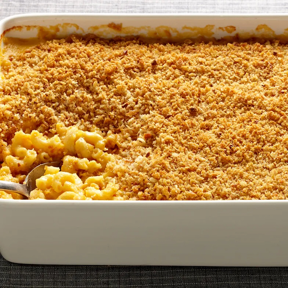

Macaroni and Cheese

A crispy, gooey, and utterly delightful
macaroni and cheese
Is this the greatest macaroni and cheese recipe of
all time? Possibly. Prep time is about 1 hour,
serves 12.
Topping ingredients:
- 2 tablespoons unsalted butter, plus more for
baking dish
- 2 tablespoons extra-virgin olive oil
- 2 cups panko
- 2 large garlic cloves, minced
- 2 ounces finely grated Parmesan
(about 1/2 cup)
- 1/2 teaspoon kosher salt
Macaroni and sauce ingredients:
- 2 teaspoons kosher salt, plus more
- 1 pound dried elbow macaroni
- 1/2 cup (1 stick) unsalted butter
- 6 tablespoons all-purpose flour
- 4 cups whole milk
- 3/4 cup heavy cream
- 1/2 teaspoon ground white pepper
- 1 1/2 tablespoons mustard powder
- 16 ounces coarsely grated extra-sharp cheddar
(about 6 cups)
- 2 ounces grated Parmesan (about 1/2 cup)
- Preheat oven to 400°F with rack in the middle
of oven. Butter the baking dish.
- In a large skillet over medium heat,
heat butter and oil until butter foam
subsides. Add panko and garlic; cook,
stirring, until crumbs are golden brown,
4 to 6 minutes. Transfer crumbs to a medium
bowl, stir in Parmesan and salt, and set
aside.
- Set a large, covered pot of salted water
over high heat to boil. Add macaroni and
cook until just al dente (avoid overcooking).
Drain macaroni and set aside.
- In a large wide pot over medium-low heat,
melt the butter. Sprinkle flour over butter,
whisking to incorporate and make a roux. Cook,
stirring constantly with a wooden spoon, until
roux is light golden, about 4 minutes. Gradually
pour in milk and cream, whisking constantly to
incorporate and make a béchamel sauce. Raise
heat to medium-high and bring sauce to a low
boil, whisking constantly. Reduce to a simmer,
whisking occasionally, and cook until béchamel
sauce is thick and coats the back of a spoon,
about 3 minutes more.
- Add 2 tsp. salt, pepper, and mustard powder.
Add the cheeses in three batches, whisking
until each addition is completely melted before
adding more. Remove from heat.
- Add the drained macaroni to the pot with the
cheese sauce and stir well to coat. Transfer
macaroni mixture to the buttered baking dish
and place on a rimmed baking sheet. Sprinkle
topping evenly over macaroni and bake until
golden and bubbling, 18 to 22 minutes. Let
cool 15 minutes before serving.